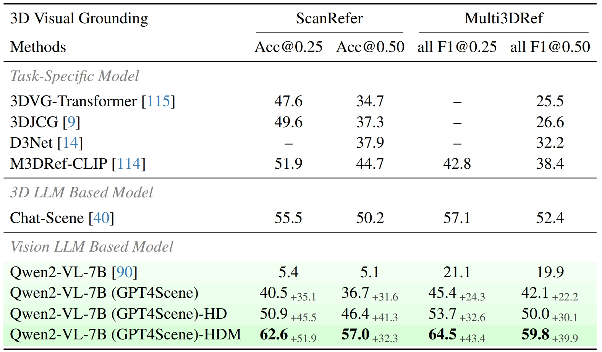

✶ indicates equal contribution. † indicates Corresponding Author
The overall architecture of GPT4Scene. It is capable of understanding 3D scenes and performing tasks such as 3D question answering, dense captioning, and visual grounding using only video input. In contrast to 3D point LLMs, GPT4Scene takes input solely from the vision modality, with global information provided by the BEV image reconstructed from the 3D structure derived from the video.
The Framework of GPT4Scene. A scene video is processed by sampling frames, reconstructing a point cloud, and generating a BEV image. Object locations are detected from the point cloud and projected onto the video frames. The resulting frames and BEV image, enhanced with STO-Markers, are then used as inputs for VLM training and inference.
Evaluation of 3D Question Answering on ScanQA and SQA3D datasets. GPT-4o (GPT4Scene) in the zero-shot setting outperforms most 3D LLM models. Fine-tuned with GPT4Scene, Qwen2-VL achieves state-of-the-art. The base setting uses N = 8 frames at 128 × 123, ”HD” increases resolution to 512 × 490, and ”HDM” combines this resolution with N = 32 frames.
Evaluation of 3D Dense Caption and 3D Visual Grounding Our results outperform all existing 3D LLM based models and this proves that indoor scenes can be understood using only the visual modality, without the 3D point clouds.
@article{GPT4Scene,
title={GPT4Scene: Understand 3D Scenes from Videos with Vision-Language Models},
author={Zhangyang Qi and Zhixiong Zhang and Ye Fang and Jiaqi Wang and Hengshuang Zhao},
journal={arXiv preprint arXiv:2501.01428},
year={2024}
}